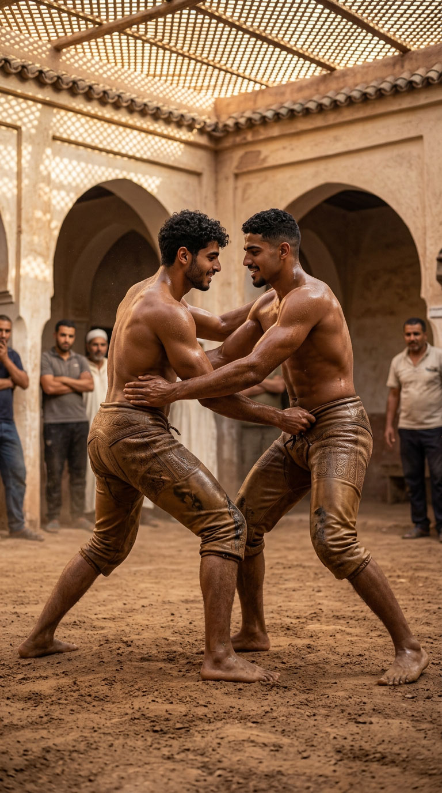
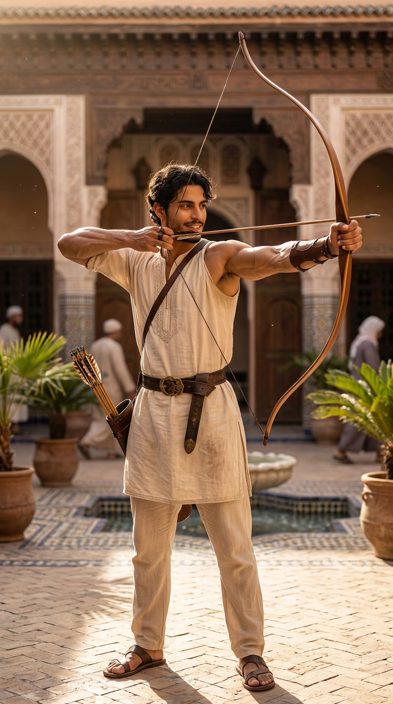

The formed body
Strength, endurance, wrestling, archery, fencing — the body is not an accessory of the craft: it is an instrument of presence and discipline.

These four disciplines belong to furusiyya, the Arab-Islamic chivalric tradition that united body, bow, wrestling and sword under a single system of formation. Before specialising, the body first had to be made capable: flexibility, endurance, resistance.
Ibn al-Qayyim, in his treatise al-Furusiyya al-Muhammadiyya, made of it a spiritual discipline as much as a physical one. Dar al-Hiraf follows the same order: the body is formed before it specialises.

BODY
Physical discipline
Harmonious training, controlled strength, endurance.
وَإِذا كانَتِ النُّفوسُ كِبارًا تَعِبَتْ في مُرادِها الأَجسامُ
“When souls are great, bodies labour to the measure of their desire.” — al-Mutanabbi
The body is not trained for its own sake: it is trained because a soul that aims high needs a body able to carry it. Endurance prepares the young man to hold, over time, the demand of the craft, of prayer and of the family to come.
This demand joins furusiyya, the Arab-Islamic chivalric tradition that reached its height under the Mamluks in Egypt in the 14th century. Before specialising — bow, sword, wrestling — the body first had to be made capable.
EQUITATION
Furusiyya — the art of the horse
The word furusiyya (فروسية) comes from faras (فرس), the horse: in the strictest sense, before wrestling, bow or sword, furusiyya designates horsemanship itself. It is the first and oldest of the Arab-Islamic chivalric disciplines — the one that gives its name to all the others.
الخَيْلُ مَعْقُودٌ فِي نَوَاصِيهَا الْخَيْرُ إِلَى يَوْمِ الْقِيَامَةِ
“Good remains tied to the forelocks of horses until the Day of Resurrection.” — Prophetic tradition, Sahih al-Bukhari, no. 2850
Classical treatises of furusiyya, systematised especially under the Mamluks, taught seat, handling and care of the horse even before mounted combat — the same progression Dar al-Hiraf applies today: the body, then the horse, then the weapon.

WRESTLING
Wrestling & strength
Body to body, respect, measure. A tradition of formative combat.
Standing wrestling, on sand, in the line of musara'at al-nuba: what counts is the controlled fall of the opponent.
To this standing wrestling, Dar al-Hiraf adds a second form, of a distinct lineage: ground wrestling, in worked leather trousers inspired by the kispet of Ottoman wrestling (yagli gures) — an agonistic tradition also documented for centuries, but foreign to the musara'at al-nuba described above. The two traditions are not confused: the first is practised standing, on sand, without ground work; the second is devoted precisely to it. Dar al-Hiraf holds them side by side rather than merging them into one — two schools, two gestures, the same demand for measure. The ground form remains reserved for the internal training context, never for public display.

RIMAYA
Archery
Rimaya. Breath, aim, stillness before the gesture. A discipline of measure as much as of strength.
“Teach your sons swimming and archery.” — Prophetic tradition (al-Bayhaqi)
“The arrow, without leaving the bow, would not reach its target.” — al-Shafi'i
Archery forms the mind more than the arm: inner stillness before any outer movement, total attention given to a single instant. A discipline of concentration and restraint.
Rimaya was one of the oldest arts of furusiyya, practised from the dawn of Islam and systematised by generations of masters, especially under the Mamluks. One taught less how to hit the target than how to hold body and breath in the moment before the shot: the same inner discipline Dar al-Hiraf seeks today.
COMBAT ARTS
Sayf wa-l-turs — sword and shield
Traditional fencing with the curved sword and the small round shield, attested among medieval Arabs alongside the lance and wrestling. Two men, two blunted blades, the guard that protects as much as it threatens — the same spirit of measure as tahtib, but carried by iron rather than wood. It belongs, like the bow and wrestling, to the lineage of furusiyya — formation of the body before any specialisation.
الخيلُ والليلُ والبيداءُ تعرفني والسيفُ والرمحُ والقرطاسُ والقلمُ
“Horses, night and the desert know me — the sword, the lance, paper and the pen.” — Abu al-Tayyib al-Mutanabbi, 10th century
This verse, one of the most famous in all Arabic literature, says everything: mastery of the sword is never separated from mastery of the pen. The formed body and the cultivated mind are one and the same discipline.